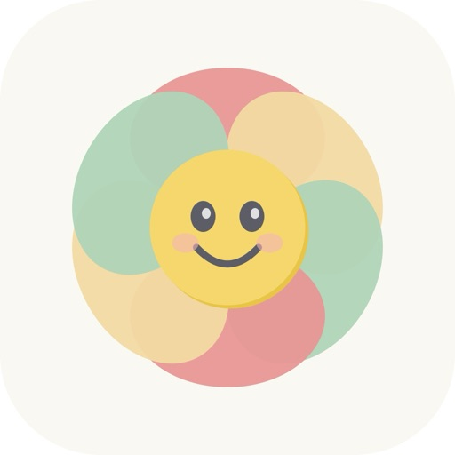

Mood Tracker App
DailyFeels makes mood tracking effortless. One tap, once a day — that's it.
DailyFeels makes mood tracking effortless. One tap, once a day — that's it.
Most mood tracker apps ask too much. They want you to rate your mood on a scale of 1 to 10, write a journal entry, tag your activities, and log your sleep. That works for the first few days, then you stop. DailyFeels takes the opposite approach: just three buttons — good, okay, or bad. Tap one, and you're done for the day.
Open the app. Tap the button that matches how you feel today. That's the entire process — it takes less than two seconds. Over time, these simple daily check-ins create a powerful picture of your emotional patterns. You'll see trends you never noticed before.
DailyFeels is free to download and use. There's an optional one-time purchase to remove ads if you'd like a completely clean experience, but all features are available for free.